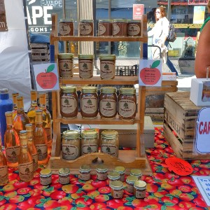
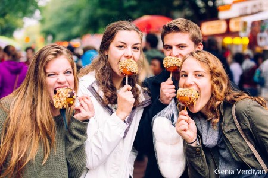
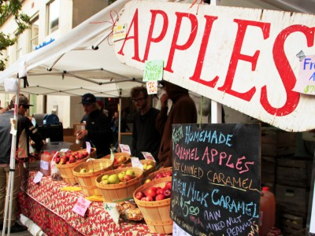

Apple Harvest Festival will host plenty of farmstand fresh apples and produce, delectable apple and seasonal baked goods, a variety of food trucks offering tasty bites, and a craft fair with artisans from around the region. There will also be live music and entertainment, plus a cider trail to enjoy refreshing cider in store and plenty of great apple and apples-inspired products for sale inside shops in and around Downtown.
History of the Festival
Since 1982, the Ithaca Apple Harvest Festival hosts apples, baked goods, family entertainment, games, prizes, live entertainment and more. Over 100 talented artists, crafters, bakers, and makers come together for the Apple Harvest Craft Fair! Find creative, unique works from clothing to woodworking, ceramics to paintings, fudge to essential oils and beyond throughout the festival. The festival is held in the Ithaca Commons, a few streets that are full of restaurants and shops.


